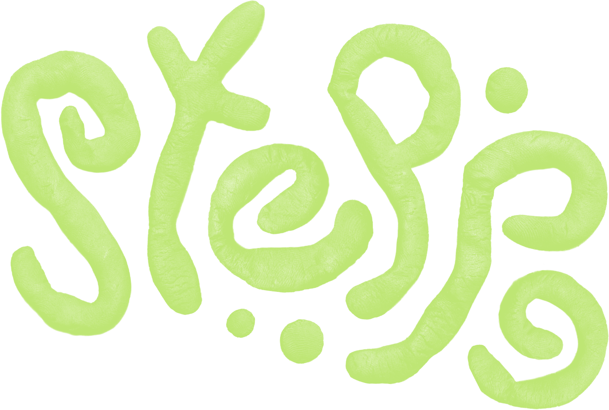
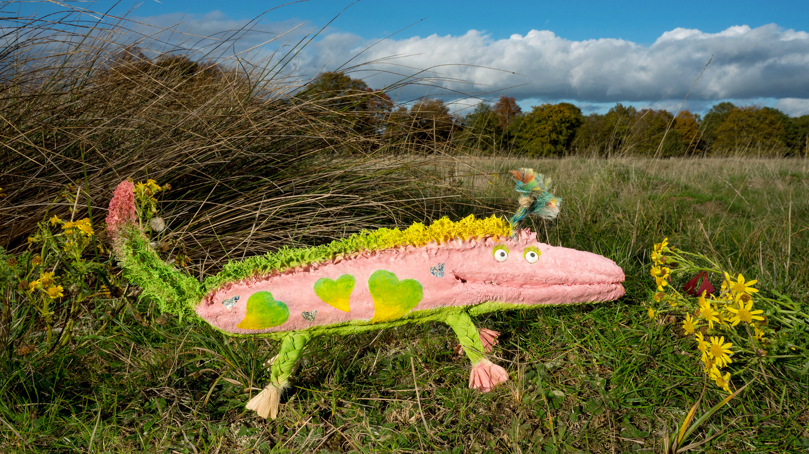
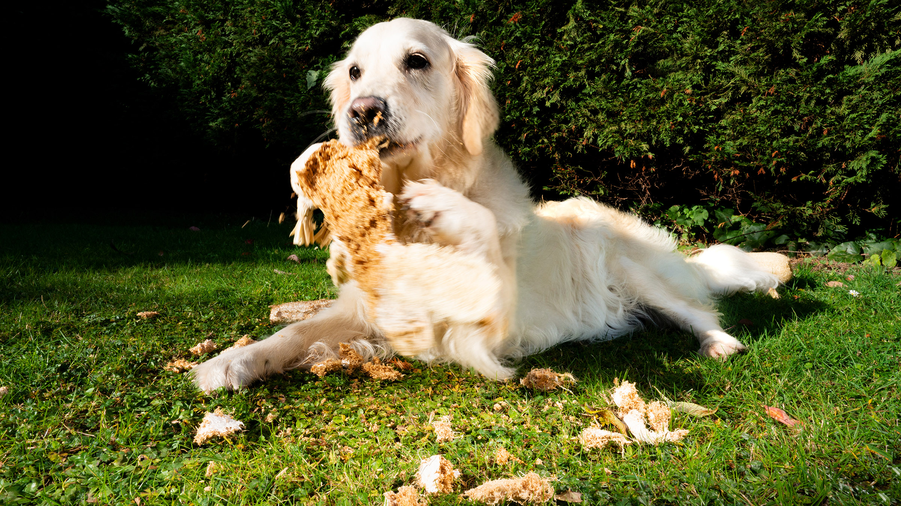
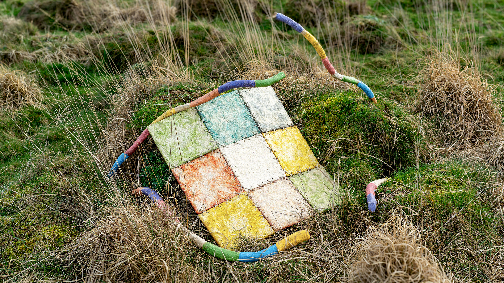
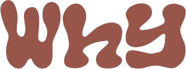
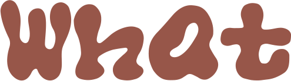
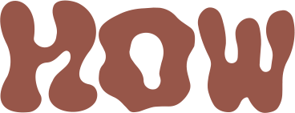

Making the Multispecies
Home a Living Ecosystem
Steppe designs everyday objects as ecological infrastructure for multispecies co-living in urban homes, informed by long-established Mongolian nomadic lifeways where multispecies relations are vital infrastructure for life, resilience and freedom.
It creates conditions for humans, animals, plants and microbes to relate and work together as an ecological network, through which natural intelligence embedded in diverse species, materials and ecological flows can be enabled to help address everyday co-living problems and wider ecological concerns.



Hover to view alternate imageLoomyco
Loofah–mycelium bio-composite soft toy that turns play into nourishment, damage into transformation, and waste into ecological participation.

 Hover to view alternate image
Hover to view alternate image
Spoor
Animal self-selection interface that reintroduces biodiversity into everyday care, bringing animal-led insight into their own wellbeing choices and decision-making.

The word ecology is rooted in the Greek oikos, meaning “household” or “place to live”. Yet today, ecology is often imagined as something outside the home, rather than something that begins within it.
Urban domestic life is now more multispecies than at any time in modern history. More than half of households worldwide now live with pets. Many also keep houseplants, while urban expansion has brought wildlife, insects, and microbes into close cohabitation with us.
The home is a unique ecosystem, a primary site where human–nature relations are practised, normalised and materialised through everyday life. It shapes how people perceive and engage with nonhumans, and how we understand our place within the wider natural world.

What makes a home a living system rather than a container of life is not living things, nor even shared space, but the relations between species. An ecosystem is a system of relations, not an arrangement of things.
On the Mongolian steppe, the most critical condition for life is not material, but relational. Health, safety, and abundance depend not only on resources, but on how relations work. Autonomy depends on cooperation, resilience on diversity, and freedom on belonging.
However, relations do not happen automatically, but are enabled by ecological infrastructures at different scales: from the steppe itself to countless micro-interfaces such as flowers and roots. They create ecological affordances through which different species can recognise, interact with and respond to one another.

I once asked a nomadic family how they managed thousands of animals so effortlessly. “We don’t manage them. We just find the pasture they like. They find what they need and treat themselves better than we or most vets could.” Nomadic herders are not omnipotent problem-solvers but experts in creating conditions for nature’s intelligence to do the work.
Multispecies co-living in urban homes is not always harmonious, from destructive pet behaviours to pigeon droppings on the balcony. Rather than restrict, suppress or separate nonhumans, Steppe designs everyday objects as interfaces that bring different species into relation, like flowers and roots in natural systems, turning friction into opportunities for new relations, cooperation and transformation.
Pets occupy a critical position in the home ecosystem, where “love-diversity” and “bio-diversity” are deeply intertwined. Steppe works with pets as ecological mediators, not only as animals to be cared for, but as agents through which new possibilities and tensions of multispecies co-living can unfold.